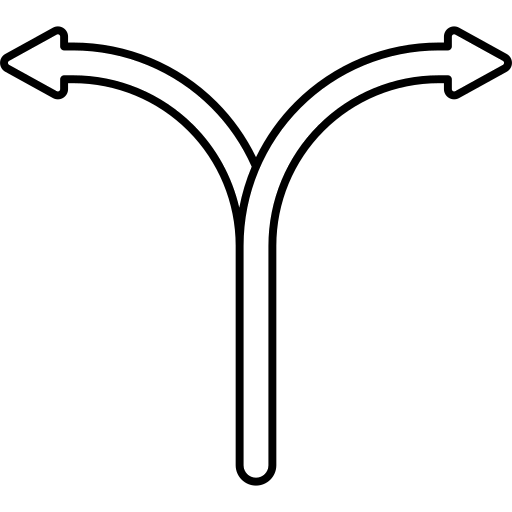
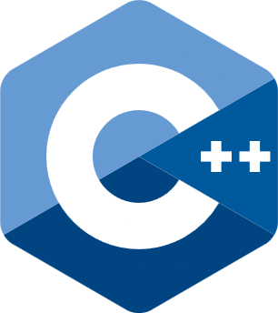
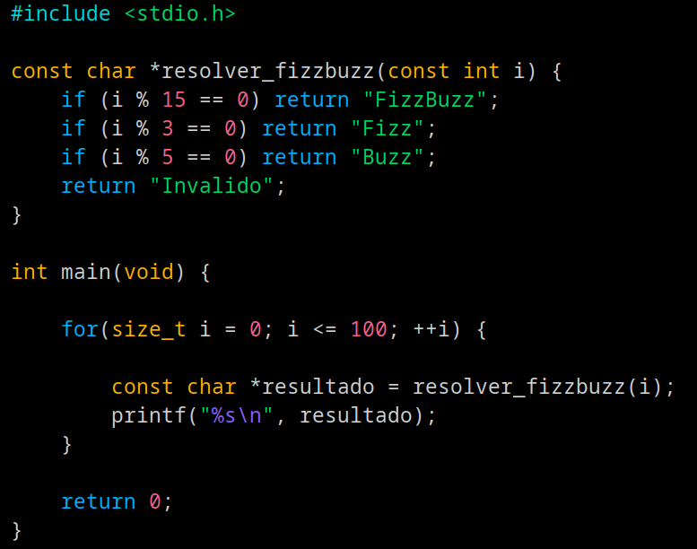
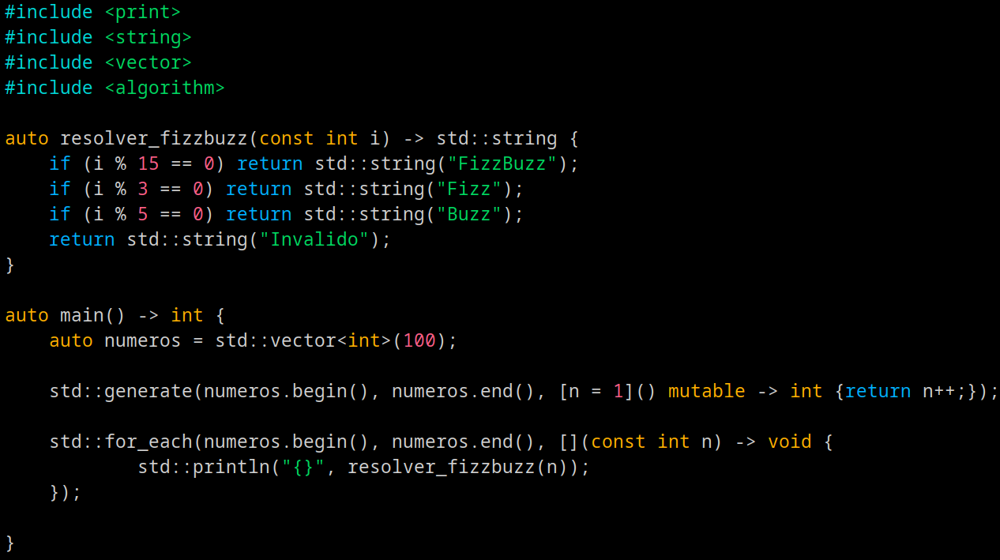

Aprender C

Atividade extensionista UNINTER
2. C, a "língua franca" da programação
O termo "língua franca" refere-se a um idioma comum usado para facilitar a comunicação entre povos de línguas diferentes (como o inglês faz no mundo atual).
Na computação, a linguagem C cumpre exatamente esse papel.
Como C é extremamente próxima do hardware e muito universal, quase todas as outras linguagens de programação (como Python, JavaScript e Java) conseguem "conversar" com ela.
Se duas tecnologias diferentes precisam se integrar, é muito comum usar o C como o ponto de encontro entre elas.

2.1 C vs C++
Os computadores entendem apenas uma "língua" muito básica chamada código binário ou linguagem de maquina (Machine Language ou ML)(composta por zeros e uns).
Como seria muito difícil e demorado escrever tudo dessa forma, usamos as linguagens de programação.
A Linguagem C é como uma "ponte" entre a forma como nós humanos pensamos e a forma como o computador funciona.
Criada na década de 1970, ela é uma das linguagens de programação mais fundamentais e influentes da história da computação.


2.2 Quando usar cada?
Escolha a Linguagem C quando: O foco for simplicidade extrema, controle total da memória e restrição de recursos. É ideal para programar chips de eletrodomésticos, sistemas embarcados de carros, robótica e o núcleo básico de sistemas operacionais.
Escolha a Linguagem C++ quando: O projeto for grande, complexo, mas ainda assim exigir desempenho máximo, porem foca mais em prover abstrações para o usuario.



Mesmo programa em C e C++ moderno (C++23)